Sweep Away the Garbage
for scalable, fault-tolerant shared VM storage
Adam Litke - alitke@redhat.com
FOSDEM 2016 - 30 January 2016
Local vm storage
Local vm storage
Multi-host local vm storage
Shared vm storage
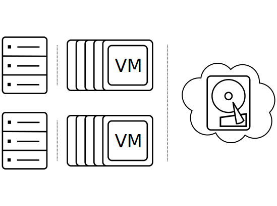oVirt shared storage
oVirt storage domain
oVirt image
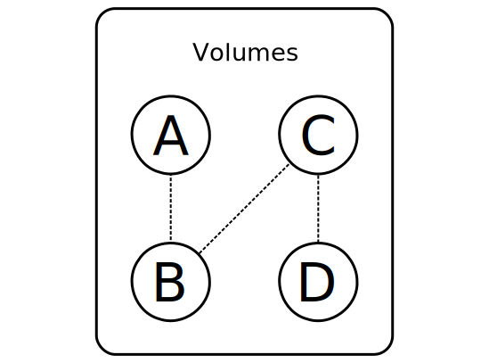oVirt volume
Storage operation types
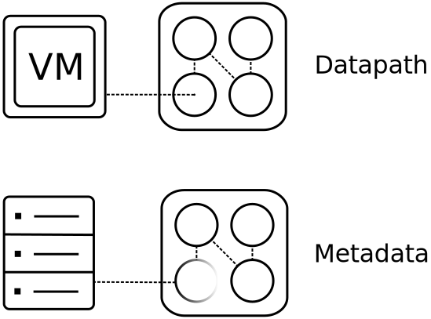Datapath operations
- Reading and writing the contents of a volume
- These are the most common and most important
- Lots of IO
- Long running
- Narrow in scope
Example: volume access
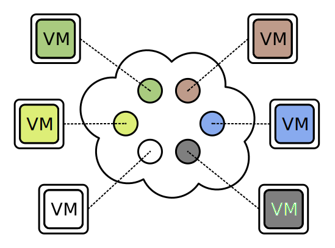Example: volume copy
Metadata operations
- Adding / removing / rearranging storage objects
- Changing storage domain metadata
- Minimal IO
- Short running
- Broad in scope
Example: create volume
Example: delete image
Preventing conflicts
- Simultaneous updates within the same scope
- Can involve one or more hosts
- Very likely to corrupt data
- Preventable with extremely careful locking
Same VM on multiple hosts
Conflicting metadata updates
Run VM during snapshot
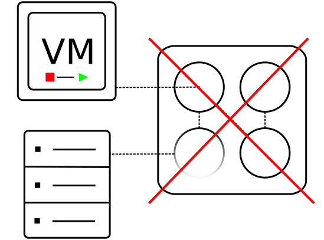Flow-level locking
- Implemented at the management server level
- Serializes user-driven actions
- Lock an image during creation
- Lock a VM while taking a snapshot
- Lock a host while it modifies storage
Shared storage locking
- Implemented using SANLock
- Lockspace exists on the shared storage itself
- Leases grant hosts exclusive access to storage resources
- Storage domain lease: needed for metadata changes
- Volume lease: protects volume contents
More about sanlock
- Host IDs
- Every host has a unique ID
- Uniqueness is enforced by SANlock
- IDs must be periodically renewed
- Failure to renew will surrender all resource leases
- Resource leases
- Represent an arbitrary resource (storage or otherwise)
- Misbehaving hosts will be fenced (rebooted)
Process level locking
- Implemented with a lock manager and RWLocks
- Locks grant storage read or modify access to a thread
- Storage domain lock: protects metadata
- Image lock: protects volume chain and metadata
Interruptions
- Some steps in a task are never completed
- Happen naturally or due to bugs
- Power or network outage
- Hardware failure
- Software failure
- Must be carefully mitigated to keep storage coherent
- Approaches
- Task manager with rollback capability
- Transactions with garbage collection
Interrupted volume creation
Interrupted volume copy
Storage transactions
- All storage commands are granular: one transaction
- A transaction is opened with a marker operation
- Subsequent steps accumulate "garbage" on storage
- A transaction is committed by converting the start marker
Example
Garbage collection
- Runs periodically on an arbitrary host
- Identifies candidates by finding markers
- Acquires necessary locks for the candidate
- Verifies the candidate should be collected
- Cleans garbage associated with the marker
- Removes the marker
Identify candidate
Acquire locks

Clean
Remove marker
Identify candidate
Acquire locks
Abort
Monitoring and resolution
- Running commands raise events or can be polled
- Progress
- State changes
- Error code and context
- Command results are not persistent
- Success or failure is evident by examining storage
Example: Create volume
Acquire domain lease
Acquire image lock
Create volatile image directory
Create volatile metadata file
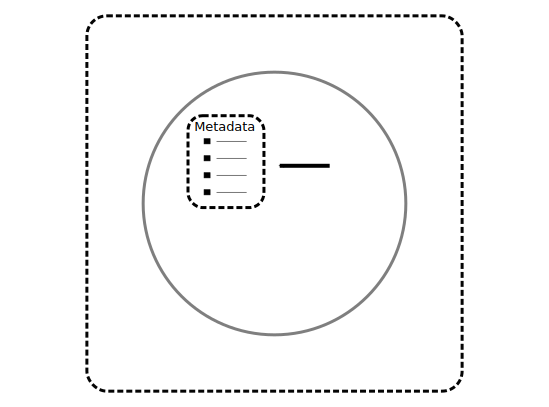Create lease file
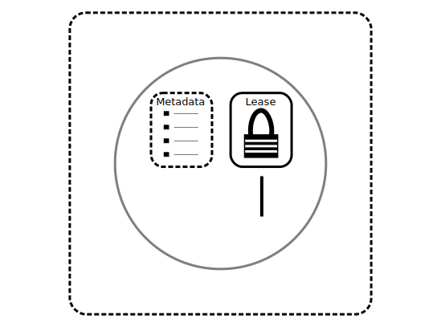Create volume data file
Commit metadata file
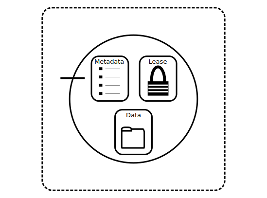Commit image directory
Release image lock
Release domain lease
Example: Remove volume
Acquire domain lease
Acquire image lock
Make image volatile
Invoke the garbage collector

Release image lock
Release domain lease
Example: Clone a volume
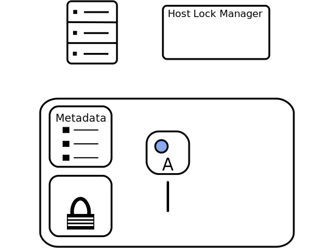Create another volume
Acquire source image lock
Acquire target image lock
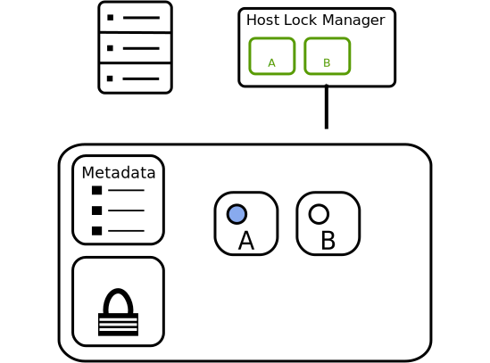Acquire source volume lease
Acquire target volume lease
Mark target volume illegal
Copy data
Progress event
Mark target volume legal
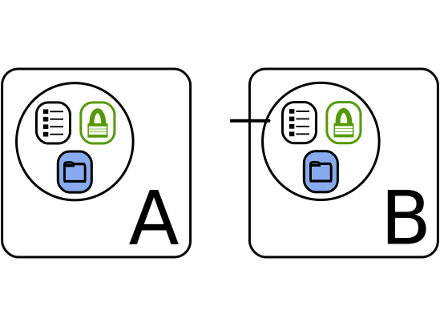Release target volume lease
Release source volume lease
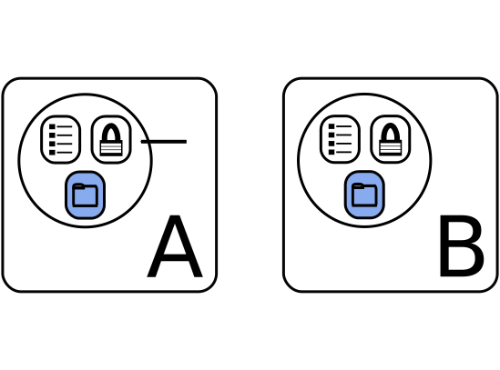Release target image lock
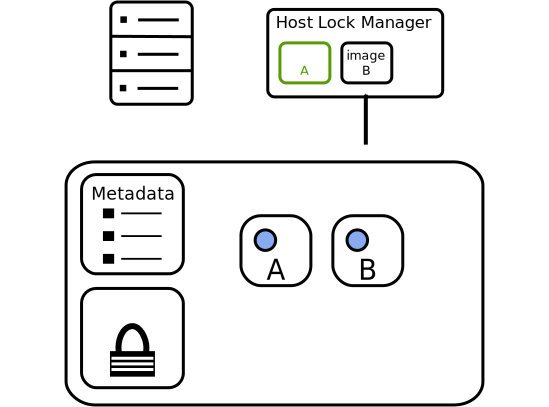Release source image lock
Completion event

Locking order
- Strict rules needed to prevent deadlock
- Storage leases before local locks
- Big containers before smaller containers
- Storage Domain ➡ Image ➡ Volume
- Source volume before destination volume
- Release the newest locks first
oVirt Resources
Questions?
Sweeping Away the Garbage - FOSDEM 30.01.2016